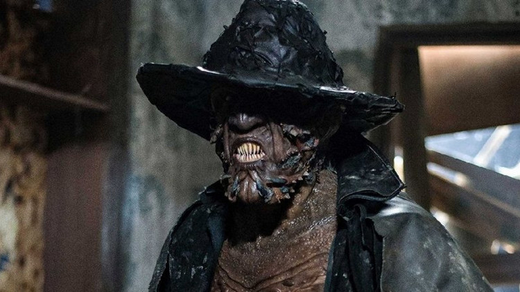

"SINOPSE - O Exorcista do Papa"

Não recomendado para menores de 16 anos Inspirado nos arquivos reais do Padre Gabriele Amorth, Chefe Exorcista do Vaticano. O padre realizou mais de 100.000 exorcismos em sua vida e faleceu em 2016 aos 91 anos. Amorth escreveu duas memórias – An Exorcist Tells His Story e An Exorcist: More Stories – e detalhou suas experiências lutando contra Satanás e demônios que agarraram e possuíram as pessoas com seu mal. O filme, sendo o retrato do personagem da vida real, acompanha Amorth (Russell Crowe) enquanto ele investiga a terrível possessão de um menino e acaba descobrindo uma conspiração secular que o Vaticano tentou desesperadamente proteger e manter no esquecimento.
"SINOPSE - Olhos Famintos"
Conheça a trama e o elenco de Olhos Famintos: Recomeço Olhos Famintos: Recomeço também acompanha a história do Creeper – a criatura que acorda a cada 23 anos para se alimentar.
Dessa vez, o personagem surge com um visual bem diferente, e toda a ação é ambientada em um festival de terror realizado na Louisiana.
O longa foca, primordialmente, em Chase e Laine, um casal que viaja à uma pequena cidade da Louisiana para participar do Horror Hound, um intenso festival de filmes de terror. Laine não demora a sofrer terríveis premonições e visões relacionadas ao passado da cidade – em particular à lenda do Creeper.
Como de costume, a criatura acorda para se alimentar, e o casal embarca em uma jornada violenta para sobreviver. O elenco de Olhos Famintos: Renascimento é liderado por Sydney Craven (Wolfblood) e Imran Adams (Barracuda).
"SINOPSE - john Wick"

SINOPSE Não recomendado para menores de 14 anos. O assassino profissional retorna às telas para John Wick 4: Baba Yaga. O assassino profissional John Wick (Keanu Reeves) agora virou metade do submundo contra ele com sua vingança, que agora está entrando em sua quarta rodada em Nova York, Berlim, Paris e Osaka. Sua equipe, composta por Bowery King (Laurence Fishburne), o gerente do hotel Winston (Ian McShane) e o concierge Charon (Lance Reddick) do lendário hotel assassino Continental, novamente fazem parte da festa. No entanto, as chances de escapar desta vez parecem quase impossíveis, pois o maior inimigo está surgindo. O implacável chefe do submundo Marquis de Gramont (Bill Skarsgård), que tem alianças inteiras atrás dele, representa a maior e sanguinária ameaça até hoje. Mas seus capangas também são durões, incluindo Shimazu (Hiroyuki Sanada) e Killa (Scott Adkins) localizados. Felizmente, existem velhos aliados como Caine (Donnie Yen) que correm para ajudar Wick. Não há caminho de volta, só um sobrevive.
"SINOPSE - Shazam"

Billy Batson tem apenas 14 anos de idade, mas recebeu de um antigo mago o dom de se transformar em um super-herói adulto chamado Shazam. Ao gritar a palavra "Shazam!", o adolescente se transforma nessa sua poderosa versão adulta para se divertir e testar suas habilidades. Contudo, ele precisa aprender a controlar seus poderes para enfrentar o malvado Dr. Thaddeus Sivana.